jVLT - Ένα εργαλείο εκμάθησης λεξιλογίου
Λεξιλόγιο
Λίστα των λέξεων
Αρχικά η λίστα των λέξεων εμφανίζει όλες τις λέξεις του λεξιλογίου. Μπορείς να ψάξεις συγκεκριμένη λέξη χρησιμοποιώντας το "Φίλτρο" που βρίσκεται στα δεξιά πάνω από τον πίνακα λέξεων. Επιλέγοντας κάποιο από τα στοιχεία της λίστας που αναδιπλώνεται καθορίζεις τον τύπο της αναζήτησης. Στη συνέχεια μπορείς να εισάγεις μια έκφραση στο επόμενο πεδίο και να πατήσεις το κουμπί με το τικ ή να πατήσεις "Enter" για να γίνει το φιλτράρισμα. Πατώντας Χ το φίλτρο δεν εφαρμόζεται πλέον, συνεπώς όλες οι λέξεις εμφανίζονται.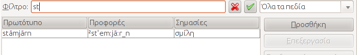
Εάν επιλέξεις το "Προηγμένο φίλτρο" στην αναδιπλούμενη λίστα, το τικ αντικαθίσταται με ένα κουμπί "...". Εφόσον πατήσεις αυτό το κουμπί, ένα παράθυρο διαλόγου εμφανίζεται που σου επιτρέπει να καθορίσεις ένα πιό εξελιγμένο φίλτρο.
Τέτοια φίλτρα αποτελούνται από περισσότερα υποφίλτρα, καθένα από τα οποία αντιπροσωπεύεται από μια σειρά που περιέχει 3 στήλες. Στην πρώτη στήλη επιλέγεις το πεδίο (Πρωτότυπο, Προφορά κλπ.), στη δεύτερη στήλη τον τύπο σύγκρισης π.χ. "ίσο", "μεγαλύτερο από", "μικρότερο από". Στην τελευταία στήλη εισάγεται η τιμή. Ανάλογα με το πεδίο και τον τύπο σύγκρισης, η τιμή μπορεί να είναι μια συμβολοσειρά, αριθμητική, ημερομηνία ή και λίστα συμβολοσειρών. Μπορείς να προσθέσεις και να αφαιρέσεις υποφίλτρα πατώντας το κουμπί "Περισσότερα" και "Λιγότερα" αντίστοιχα. Για να επαναφέρεις το πλήκτρο στην αρχική του κατάσταση, πάτησε "Επαναφορά". Επιλέγοντας "Ταίριαξε όλα τα παρακάτω" ή "Ταίριαξε ένα από τα παρακάτω" καθορίζεις το εάν όλα τα υποφίλτρα πρέπει να ισχύουν ταυτόχρονα, ή αν αρκεί το να ισχύει μόνο ένα.
Ένα φίλτρο μπορεί να αποθηκευτεί εισάγοντας ένα όνομα στο πεδίο στην κορυφή του παραθύρου διαλόγου, και επιλέγοντας "Νέο/Ενημέρωση". Ένα αποθηκευμένο φίλτρο φορτώνεται επιλέγοντας το αναδιπλούμενο μενού. Πρέπει να επιλέξεις "Εφαρμογή" ουτος ώστε να ενεργοποιηθεί. Στην περίπτωση που θέλεις να αλλάξεις ένα υπάρχον φίλτρο, φόρτωσε και τροποποίησε το, και στη συνέχεια πάτησε το κουμπί "Νέο/Ενημέρωση" Για να διαγράψεις ένα φίλτρο επίλεξε "Διαγραφή".
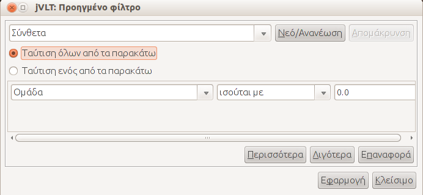
Επιλέγοντας στήλες και ταξινομώντας
Κάνοντας δεξί κλικ στους τίτλους των στηλών, θα εμφανιστεί ένα pop-up μενού που επιτρέπει την ταξινόμηση της λίστας με αύξοντα ή φθίνοντα τρόπο (ή καθόλου ταξινόμηση), βάσει της συγκεκριμένης στήλης.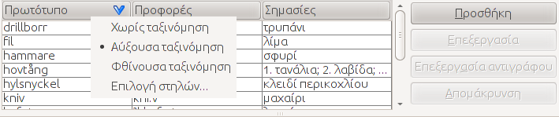
Το pop-up μενού επίσης περιέχει το αντικείμενο "Επιλογή στήλης.." που επιτρέπει στον χρήστη να επιλέξει τις στήλες για τη λίστα λέξεων. Μπορείς να επιλέξεις και να αποεπιλέξεις στήλες ως εξής: επίλεξε το όνομα της στήλης και μετά πάτα το βέλος που δείχνει αριστερά για επιλογή, ή το βέλος που δείχνει δεξιά για αποεπιλογή. Η σειρά εμφάνισης των ονομάτων των στηλών αλλάζει χρησιμοποιώντας το βέλος που δείχνει πάνω και το βέλος που δείχνει κάτω. Η στήλη που αντιστοιχεί στο ανώτατο όνομα στήλης θα εμφανίζεται στην αριστερότερη θέση της λίστας λέξεων.
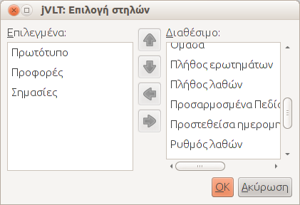
Επιλέγοντας τα κουμπιά "Προσθήκη", "Επεξεργασία" και "Διαγραφή" δίπλα από τη λίστα λέξεων μπορείς να: εισάγεις, αλλάξεις ή διαγράψεις λέξεις, αντίστοιχα.
Λεπτομερής Εμφάνιση
Η λεπτομερής εμφάνιση δείχνει την ορθογραφία, την προφορά, την μετάφραση και παραδείγματα της επιλεγμένης λέξης. Στην καρτέλα Εμφάνιση του παραθύρου ρυθμίσεων μπορείς να καθορίσεις το πλήθος των λεπτομερειών που εμφανίζεται. Εάν ένα παράδειγμα είναι επιλεγμένο, οι λέξεις για τις οποίες δημιουργήθηκε εμφανίζονται τονισμένες. Επιλέγοντας "Επεξεργασία" δίπλα από ένα παράδειγμα, μεταφέρεσαι στην καρτέλα Παραδείγματα.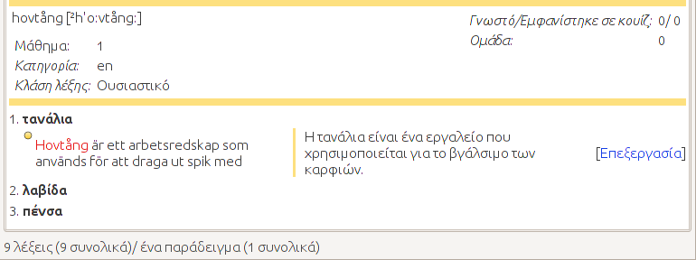
Για να προσθέσεις περισσότερες πληροφορίες σε μια λέξη μπορείς να καθορίσεις αρχεία ήχου και εικόνας, διαδικασία που περιγράφεται στην επόμενη ενότητα. Τα αρχεία εμφανίζονται στη λεπτομερή απεικόνιση ως εικόνες. Κάνοντας κλικ στην εικόνα ενός αρχείου ήχου, θα αναπαραχθεί το αντίστοιχο αρχείο. Κάνοντας κλικ σε ένα αρχείο εικόνας θα ανοίξει ένα νέο παράθυρο που εμφανίζει την εικόνα.
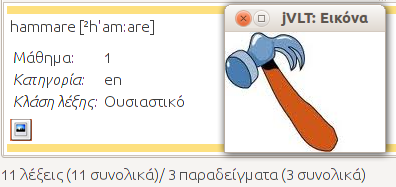
Προσθέτοντας λέξεις
Κάνοντας κλικ στο κουμπί "Προσθήκη" δίπλα από τη λίστα λέξεων, μπορείς να προσθέσεις λέξεις στο λεξιλόγιό σου. Στο παράθυρο διαλόγου που εμφανίζεται μπορείς να δεις 3 πεδία "Πρωτότυπο", "Προφορά" και "Μάθημα". Το πρώτο πεδίο είναι υποχρεωτικό ενώ τα επόμενα δύο όχι. Αν η λέξη που θέλεις να καταχωρίσεις έχει περισσότερες από μία προφορές, πάτησε το κουμπί "Περισσότερα...". Μπορείς να επιλέξεις υπάρχοντα μαθήματα χρησιμοποιώντας το κουμπί με σχήμα βέλους στα δεξιά της φόρμας και να επιλέξεις μάθημα από το αναδιπλούμενο μενού.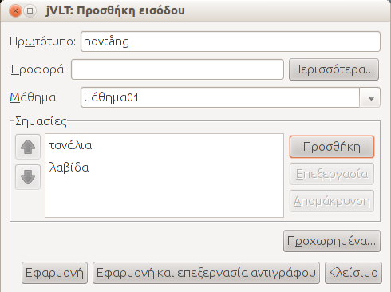
Μία λέξη πρέπει να έχει τουλάχιστον μια σημασία. Μπορείς να προσθέσεις σημασίες χρησιμοποιώντας το κουμπί "Προσθήκη". Στη συνέχεια, εισάγεις το κείμενο στο πεδίο "Μετάφραση". Το πεδίο "Ορισμός" χρησιμοποιείται ως σημείωση για τον τύπο, τη χρήση της λέξης κοκ. Δεν είναι απαραίτητη η συμπλήρωση και των δύο πεδίων, η συμπλήρωση ενός μόνο αρκεί. Εάν μία λέξη έχει περισσότερες από μία σημασίες μπορείς να αλλάξεις τη διάταξη τους χρησιμοποιώντας τα βέλη που βρίσκονται αριστερά του παραλληλόγραμμου.
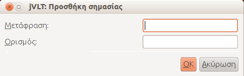
Όταν τελειώσεις με την τροποποίηση της λέξης, επίλεξε "Εφαρμογή" ή "Εφαρμογή και Επεξεργασία Αντιγράφου" και η λέξη θα προστεθεί. Το κουμπί "Εφαρμογή και Επεξεργασία Αντιγράφου" δεν θα καθαρίσει τα πεδία που έχεις συμπληρώσει, και αυτό είναι χρήσιμο στην περίπτωση που θέλεις να εισάγεις πολλές παρόμοιες λέξεις. Το παράθυρο διαλόγου δεν θα κλείσει αφού πατήσεις ένα από τα δύο κουμπιά εφαρμογής, μπορείς συνεπώς να συνεχίσεις να προσθέτεις λέξεις, ή να πατήσεις "Κλείσιμο" για να επιστρέψεις στο κυρίως παράθυρο.
Προχωρημένες Ρυθμίσεις
Πατώντας το κουμπί "Προχωρημένες Ρυθμίσεις...", μπορείς να επεξεργαστείς επιπλέον χαρακτηριστικά μίας λέξης.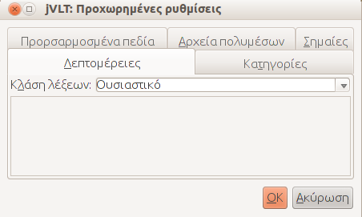
Λεπτομέρειες Λέξης
Το αν εμφανίζεται η καρτέλα "Λεπτομέρειες" του παραθύρου διαλόγου εξαρτάται από το αν έχεις ορίσει μία γλώσσα για το λεξικό μέσω του μενού "Επεξεργασία->Ιδιότητες". Στην καρτέλα λεπτομέρειες μπορείς να επιλέξεις τύπο λέξης, π.χ. ουσιαστικό, ρήμα κλπ. Για τους περισσότερους τύπους μπορείς να καθορίσεις επιμέρους λεπτομέρειες. Για παράδειγμα στην εικόνα που εμφανίζεται παραπάνω, είναι εφικτό να καθορίσεις το φύλο ενός ουσιαστικού.Κατηγορίες
Προαιρετικά, μια λέξη μπορεί να ανατεθεί σε κατηγορίες (π.χ. "Μέλη Οικογένειας"). Μπορείς να επιλέξεις υπάρχουσες κατηγορίες από την αναδιπλούμενη λίστα ή να προσθέσεις νέες. Αφού δημιουργήσεις μία νέα κατηγορία, πρέπει να πατήσεις "Προσθήκη".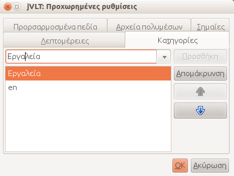
Αρχεία Πολυμέσων
Μπορείς να καθορίσεις αρχεία ήχου και εικόνας για μία λέξη. Για παράδειγμα ένα WAV αρχείο που περιέχει την προφορά της. Είναι επίσης εφικτό το να επιλέξεις εάν η τοποθεσία του αρχείου θα αποθηκευτεί ως σχετικό (π.χ. "images\image.gif") ή απόλυτο μονοπάτι(π.χ. "D:\jvlt\images\image.gif") επιλέγοντας/αποεπιλέγοντας το checkbox(θυρίδα επικύρωσης). Εάν διαλέξεις την πρώτη επιλογή το μονοπάτι θα είναι σχετικό στην τοποθεσία του αρχείου λεξικού. Για παράδειγμα αν το αρχείο λεξικού είναι στο "D:\jvlt\dict.jvlt" και η τοποθεσία της εικόνας είναι "images\image.gif", τότε το jVLT θα αναζητήσει την εικόνα στο "D:\jvlt\images\image.gif".Εάν το jVLT δεν μπορεί να αναπαράγει/εμφανίσει αρχεία συγκεκριμένου τύπου, μπορείς να καθορίσεις εξωτερικές εντολές στο Παράθυρο Διαλόγου Ρυθμίσεων.
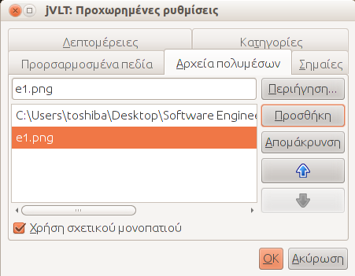
Σημαίες(flags)
Σε αυτή την καρτέλα, μπορείς να θέσεις σημαίες που καθορίζουν το αν η λέξη θα εμφανιστεί σε ένα κουίζ. Οι σημαίες θα εξαφανιστούν εάν επιλέξεις επαναφορά (δες το Μενού Εργαλείων). Προς το παρόν υπάρχουν οι εξής σημαίες.- Γνωρίζω αυτή τη λέξη - Μη με ξαναρωτήσεις
- Όχι και τόσο χρήσιμο - Βάλε το στην άκρη
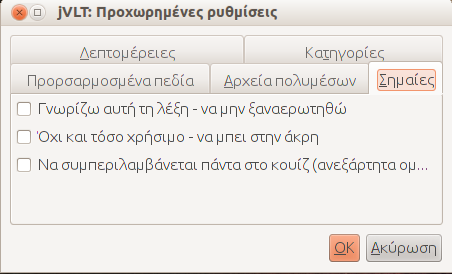
Επεξεργασία Αντιγράφων Λέξεων
Πατώντας το κουμπί "Επεξεργασία αντιγράφου" μπορείς να προσθέσεις μια λέξη που χρησιμοποιεί μία υπάρχουσα ως πρότυπο. Δεν επιτρέπεται να εισάγεις την ίδια λέξη δύο φορές, για αυτό πρέπει να τροποποιήσεις μία λέξη πριν την προσθέσεις.Επεξεργασία Λέξεων
Μπορείς να επεξεργαστείς μια λέξη εφόσον πρώτα την έχεις επιλέξει στη λίστα λέξεων και στη συνέχεια πατήσεις το κουμπί "Επεξεργασία" δίπλα από τη λίστα. Η επεξεργασία μίας λέξης είναι σχεδόν ίδια με την προσθήκη μιας νέας. Η μόνη διαφορά είναι η εξής: Εάν θέλεις να διαγράψεις ένα νόημα πρέπει να σιγουρευτείς οτι δεν υπάρχει παράδειγμα συνδεδεμένο με αυτό.Εάν επιλέξεις περισσότερες λέξεις προτού πατήσεις "Επεξεργασία"(είτε έχοντας χρησιμοποιήσει το πλήκτρο Ctrl ή Shift ενώ κάνεις κλικ στις λέξεις) μπορείς να τροποποιήσεις το μάθημα και τις Προχωρημένες ρυθμίσεις για όλες τις επιλεγμένες λέξεις ταυτόχρονα. Οι νέες ρυθμίσεις αντικαθιστούν τις παλιές. Για παράδειγμα αν τροποποιήσεις δύο λέξεις ταυτόχρονα, με τη μια να ανήκει στο μάθημα "Α" και την άλλη στο "Β", και δημιουργήσεις ένα τρίτο μάθημα "Γ" και για τις δύο, τότε δε θα σταματήσουν να ανήκουν στα "Α" και "Β" αντίστοιχα.
Διαγραφή Λέξεων
Για να διαγράψεις λέξεις πρέπει πρώτα να τις επιλέξεις από τη λίστα. (Μπορείς να επιλέξεις περισσότερες από μία χρησιμοποιώντας τα πλήκτρα Ctrl ή Shift). Αφού επιλέξεις "Διαγραφή" ένα παράθυρο διαλόγου θα εμφανιστεί και θα σου ζητήσει να επιβεβαιώσεις την απόφαση σου. Όλοι οι σύνδεσμοι μεταξύ παραδειγμάτων και διαγεγραμμένων λέξεων θα διαγραφούν. Εάν ένα παράδειγμα χάσει όλους τους συνδέσμους που έχει με λέξεις θα διαγραφεί επίσης. Το πλήθος των παραδειγμάτων που θα διαγραφεί ή τροποποιηθεί θα εμφανιστεί στο παράθυρο διαλόγου.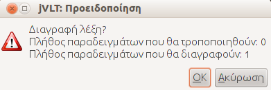
Για να δεις όλα τα παραδείγματα που σχετίζονται με μία συγκεκριμένη λέξη επίλεξε Λεπτομερής Εμφάνιση.